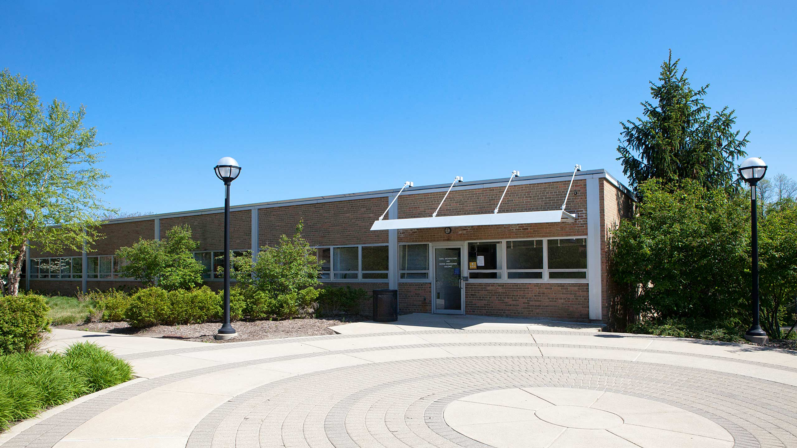

Professional
Research Philosophy
I like to use a combination of physical experiments and computer simulation to solve engineering problems. Physical experiments can more closely represent what is happening in a system, but simulation will let you see inside that system and visualize specific relationships or data that you would not be able to get otherwise. It's a win-win! And by "physical experiments" I don't just mean making waves in the towing tank. If you're in my class, you're probably helping me run an experiment, too!
I am also a big proponent of open source software. If you don't already know LaTeX, stop reading this and go learn it right now.
Teaching Philosophy
I try to emulate all the best teachers I've ever had, and I try to do the opposite of all the bad teachers I've ever had! Mostly, though, I try to remember that my students are people, too, and we all have lives outside of class. I try not to overload them with work just for my class, and I hope that they remember that I'm not continually hanging out online waiting to immediately respond to a question they post. I encourage empathy in my students and myself and consider humor a valuable teaching tool.
Below is an image of the Naval Architecture and Marine Engineering building where I work and teach!
